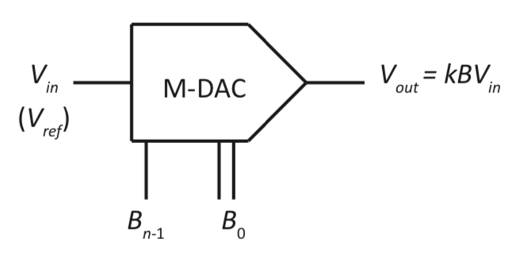
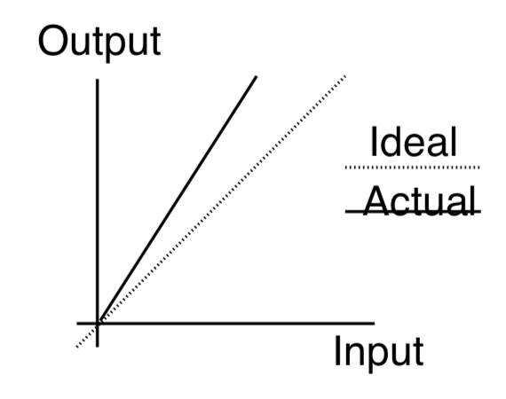
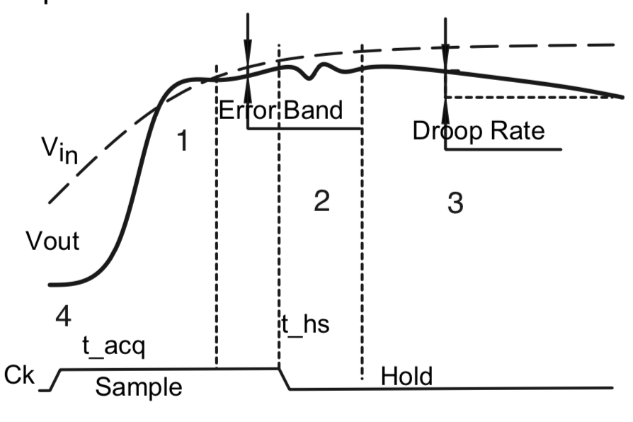

Two modes:
- Comparator: An op-amp connected without feedback can be configured to be a
comparator. In this case, the output values are close to either VS or VS-
- With feedback path
- Negative feedback
- Positive feedback (not this term)
Op-Amp (without feedback) as a Comparator
Often required for interface between the analog and digital domains.
Note: if there is no feedback component(s), then the output switches to either VS or VS-.
Open Loop Comparator
Op-Amp (without feedback) as a Comparator - Output Characteristics
Equating (1) and (2) results in:
-\frac{V_{out}}{A_{V_{ol}}}= {(V_{out} - V_{in})}\frac{R_{in}}{R_{in} + R_{f}} + V_{in}
\implies V_{out}( \frac{R_{in}}{(R_{in} + R_{f})} + \frac{1}{A_{V_{ol}}})=-V_{in}( \frac{R_{f}}{(Rin+ R_{f} )} )
Therefore, if A_{V_{ol}} \rightarrow \infty
\frac{V_{out}}{V_{in}} = -\frac{R_{f}}{R_{in}} \implies V_{out} = -\frac{R_{f}}{R_{in}} \times V_{in}
(Typical values for A_{V_{ol}} are between 10^5 and 10^6.)
Simplified Op-Amp Analysis
dac2
Current Summer/Inverting Adder/Weighted Summer
dacsumm
Basic Non-Inverting Amplifier
dac3
Non-Inverting Amplifier: An op-amp configured with a resistor feedback element such that an increase in the input voltage results in an increase in the output voltage
Non-Inverting (Unity Gain) Buffer
Non-Inverting Buffer: A special case non-inverting amplifier R_f = 0; R_{in} = \infty
V_{out}=V_{in}
High impedance input
Low impedance output
dacbuff
In practice, a finite but small value of Rf is used to prevent V_{out} from oscillating
Since R_{in} is infinite, the exact value of Rf doesn’t matter
Dynamic Characteristics of Analog Signals
step response when viewed at an analog level (i.e., this is true for all signals)
Delay
time from 0 to 10%
Slew
10% of the value to within 10% of final value, may require ringing before
Ring
time taken to settle on a value, also called settling time (it may or may not be 10%, and is manufacturer dependent)
The Step response is characterized by
Settling Time: The time for the output to settle within a specified range of the final value for a given input.
Slew Rate: The rate at which signals change from one value to another.
Analog Signal Conversion Issues
Quantization: When an analog signal is reduced from a continuous signal to a set of digital values, a range of analog signals must be assigned a single digital value (quantity). The act of this transformation is quantization.
LSB: On the analog side, one LSB is the change in the analog signal that corresponds to a change of the least significantl bit of the digital representation. A more mathematical specification is
that 1LSB = \frac{FSAR}{2^n-1}, where FSAR is the full-scale analog range and n is the number of bits
used by the digital representation.
Analog
Digital
continuous
discrete
real
integers
LSB (voltage or current)
LSB (bit)
Digital-to-Analog Converters
Digital-to-Analog Converters
dacover
D/A Converters (DACs)
Output voltage (or current) proportional to:
Analog reference voltage (V_{ref}) and
n bit binary input
x=k\cdot V_{ref}\cdot B (x is the output, k a proportionality constant, V_{ref} the reference voltage, and B the binary word).
the function above is our design goal, for this digital to analog converter
It will be shown that:
Full-scale: V_{Max}=k\cdot V_{ref}(2^n -1)
Often |k| \leq \frac{1}{2^n} and thus |V_{Max}| \leq |V_{ref}|
mathematically ensured, since it is 1 LSB less than the total
dacrange
dacrange2
In dacrange we want the patterns to be error free, but it does raise the question of what they should be in between
so dacrange2 uses the approximation as shown
if 1LSB = \frac{FSAR}{2^n-1} = \frac{3.75V}{2^2-1} = \frac{3.75}{3} = 1.25V
Notice here that this calculation is also equal to\frac{V_{ref}}{2^n} where V_{ref} = 5V
Assume that switch i is switched (connected) when a ‘1’ is applied to bit B_i.
this would get pretty fucking expensive to fabricate since the resistances are either going to be too big or too small depending on what you decide as like the base resistance value
moreover if you want to do this with more bits you would need way more resistors
the “switches” could be implemented with transistors, and depending on the switches switched on, the resistance changes, and thus the current from the circuit could keep changing
V_{out} = -\frac{V_{ref}}{2^n}\sum_{i=0}^{n-1}B_i2^iNote:V_{out}^{max} = -V_{ref}\frac{2^n-1}{2^n} = FSAR
Notice how this works perfectly for the 3.75/5 example that we just did above where n=2
To get rid of the negative, just supply a negative V_{ref} to get a positive output Reminder: These derivations are all based on the assumption that the feedback resistor is of size 0.5R. A different value of the feedback resistor will lead to different results and a different value of k.
1LSB works out to be 1LSB = -\frac{V_{ref}}{2^n}
I - Binary Weighted Resistor Ladder - Varying Input Impedance
Note Input Impedance (w.r.t. V_{ref}) varies as n-bits vary.
Consider the current demands on V_{ref} if all of the B values are 1, then compare that to the situation when all of the B values are 0.
It is easier to make a constant voltage source if you have a constant current load
weighta
Constant current load from the V_{ref} source. However, this current load is now the same as the maximum current load in the previous version.
You can see how now regardless of where the switch is positioned, as long as it is touching one of the flows then you will have a path for the current to flow. NOTE: there will be varying as the switches switch positions from 0 to 1, but that varying would be way lesser. The switching is more complicated, but it is still doable
Note: How do I attach one of these to my processor?
weighta1
The register could either be the one associated with the parallel port, or could be the register from some form of serial interface (i.e., SPI).
Resistor Values
For large n very large resistors are needed. Consider the two cases shown to the left.
100 mA is too large for most/all normal op-amps. (Case 2)
4\mu A is down in the noise level of most op-amps. (Case 1)
Large range of resistors is very hard to fabricate precisely.
Nominal
Case 1
Case 2
Bit
Resistor
Resistor
Resistor
7
2^{0} \times R
10 k\Omega
100 \Omega
6
2^{1} \times R
20 k\Omega
200 \Omega
0
2^{n-1} \times R
1.28 M\Omega
12.8 k\Omega
Corresponding Op-Amp Characteristics
Parameter
Case 1
Case 2
Vref
\;\;
10V
10V
IB7
1mA
100 mA
IB0
4\mu A
400 \mu A
II R - 2R Ladders
r2ra
Input Impedance is fixed at Z_{in} = R (Start from the right)
I = \frac{V_{ref}}{R}
I_1=\frac{I}{2}
I_2=\frac{I_1}{2} =\frac{I}{4} etc.
This circuit basically allows us to get those binary weighted circuits
fucking stupid IIT circuit
Note: How Do R - 2R Ladders Work?
Consider the modified version of the figure shown below.
At the blue points the circuit to the right always looks like two 2R resistors in parallel (when looking to the right).
The two parallel 2R resistors split any current in half
The two parallel resistors (effective resistance 1R) are in series with a resistor with a resistance of R.
r2ra2
the impedance seen by the power supply is always R
at each blue line, the resistance always gets set back to R
II R - 2R Ladders
r2r1
Notice that the two grounds are actually connected
V_{out} = -I_{T}R = -R I_T = -R[{B_0\frac{I}{16} + B_1\frac{I}{8} + B_2\frac{I}{4} + B_3\frac{I}{2}}]
V_{out} = -R[{B_0\frac{V_{ref}}{16R} + B_1\frac{V_{ref}}{8R} + B_2\frac{V_{ref}}{4R} + B_3\frac{V_{ref}}{2R}}]
V_{out} = -\frac{V_{ref}}{16}[{B_0 + 2B_1 + 4B_2 + 8B_3}]
V_{out} = -\frac{V_{ref}}{16}\sum_{i=0}^{3}B_i2^i
or x = kV_{ref}B where x = -\frac{1}{16}
The feedback resistor is now R and not 0.5R
NOTE The range and current problem still exists, because if you make the resistance change really long then you still get I/256, which is still within the range of our error.
R - 2R Characteristics
Easy to fabricate 2 resistors of fixed ratios.
Exact value not critical.
You can literally just build one resistance and then just connect 2 of them in series to get the combinational circuit you need.
although you could do it for 256R too, the effective R chain would be TOO long
even if you manufacture the wrong resistance, ONLY the ratio matters
Consider an n-bit DA V_{out} = -\frac{V_{ref}}{2^n}\sum_{i=0}^{n-1}B_i2^i
Full scale output B_i =1,\forall i,0\leq i\leq n-1
Multiplying DACs (M-DACs)
Most would consider V_{ref} to be a fixed value, but
One could vary V_{ref} and at the same time vary the digital control lines.
Multiplying DAC (M-DAC): A digital-analog-converter configured so that the analog input (voltage) signal (previously referred to as V_{ref}) is a time-varying signal. Such a system would have an output analog voltage of: V_{out} = k \times B \times V_{in} as shown below.
mdac2
Thus, the M-DAC implements a programmable-gain amplifier for the analog input voltage. If you attach an analog signal to V_{in}, then you control the gain with the digital signal (B).
this way it can be used as a “FUCKING” volume knob
the numbers you are controlling in the knob is the bit pattern
The BIGGEST challenge is the output of the OPAMP, because here we are taking the Opamp to be ideal so there could be delays
D/A Converter Characteristics - Specifications
Resolution (DAC and ADC): The number of bits in the digital value used for the input to the DAC (or the output from the ADC). (e.g., 12-bits)
sometimes you might talk about effective DAC, because sometimes the number of bits the device can handle. In a 16 bit DAC, the last bit could literally just be noise, in which case the effective resolution is 15 bits
Precision (DAC and ADC): The smallest distinguishable change in output. Ideally 1 LSB. (e.g., for a 12-bit D/A \implies 1 in 2^{12} or 0.024% of full scale.)
1LSB should be concerning, because there are some manufacturers that do not follow this
Accuracy: Comparison of the actual output to the expected output.
A converter with 10V full scale and an accuracy of 0.2% ⇒ max. error of 20 mV (10 \times 0.002).
Often specified as a fraction of the LSB (e.g., \pm 0.5\times LSB).
For example, since the precision of a 10-bit D/A is 1 in 2^{10} or 0.1%, the accuracy should ideally be \leq\pm 0.05\%.
Range: The maximum output value minus the minimum output value.
Dynamic Range: The New Penguin Dictionary of Electronics defines dynamic range as: The range over which an active electronic device can produce a suitable output signal in response to an input signal. It is often quoted as the difference in decibels between the noise level of the system and the level at which the output is saturated (the overload level).
The noise level is at least 1 LSB. (In decibels 20 log(kV_{ref} ).)
saturation is 2^{n} - 1. (In decibels 20 log(kV_{ref} \times (2^n - 1)).)
Dynamic Range (in dB) = 20 log(2^n - 1) dB.
For example 4 bits \rightarrow 20 log_{10}15 \approx 20 db.
Errors: consider errors in 3 groups:
gain and offset errors: errors are independent of the applied digital value.
linearity errors: errors that may be considered to be dependent on the applied B value.
environmental errors.
Errors
Offset Errors
Offset Error: An analog shift in the output of a DAC that is constant over the full range of digital input values.
Sometimes specified as a percentage of the range. \frac{offset}{range} \times 100\%
An offset error may be caused by leakage currents in the switches or by some bias current at the input to the op-amp.
The offset error may also have a temperature coefficient.
Calibration can reduce the impact of these errors.
dacerr1
the given diagram is actually a step function but has been approximated as a straight line
can be solved by simple subtraction in software
Gain Errors
Gain Error: An error in the analog output of the DAC that varies (linearly) with the digital value applied. Errors in gain can often be attributed to errors (or drift) in resistor values. May also be caused by changes in the reference voltage.
May have a temperature coefficient (i.e., q parts per million per degree C)
Gain errors can also be corrected through calibration (for a given constant temperature). Often compensated for at full-scale.
dacerr2
can be solved by simple multiplication in software
Note: A Mathematical Model of Linear Errors and Calibration
EVEN IF THERE IS THE GRAPH ON THE LEFT MOST, IF THERE IS A NEGATIVE EXCURSION LOW ENOUGH IT COULD ACTUALLY BLOW UP MY CIRCUIT
Linearity Errors - Differential
Differential Non-Linearity (DNL): The differences between the analog values corresponding to consecutive (input) digital values.
DNL = Max(|(V_{out}(i + 1) - V_{out}(i)) - (\Delta V)_{ideal}|)
e.g., DNL = 1 LSB means that moving from B = i to B = i + 1 will result in a change of
output between 2 LSBs and 0 LSB in magnitude. ((\Delta V)_{ideal} is one LSB)
dacerr3a2011
Monotonicity Error
Monotonicity Error : If, for any two consecutive digital values, increasing from i to i + 1 results in a decrease in output (analog) values, there is a monotonicity error. This can occur if DNL > 1LSB.
impact of this error:
imagine if the more you pressed the gas, the more it slows down
you go to stop, and it starts speeding up or not slowing down
monotonicity
Linearity Errors - Integral
Integral Linearity: The maximum deviation between the true output and a straight line representing the ideal output. This calculation/measurement is based on the assumption that all of the linear errors have been eliminated (compensated).
dacerr32011
Note: Error Example
Assume that you have a converter with the following output. In this example, 1 LSB has an analog value of 0.5 V.
DAC Input
Expected Output EOi
Actual Output AOi
INL Component (EOi-AOi)
DNL Component (See Below)
0
0V
0V
0V
NA
1
0.5 V
0.4 V
0.1 V
0.1 V
2
1.0 V
0.8 V
0.2 V
0.1 V
3
1.5 V
1.2 V
0.3 V
0.1 V
4
2.0 V
1.8 V
0.2 V
0.1 V
5
2.5 V
2.8 V
0.3 V
0.5 V
6
3.0 V
3.3 V
0.3 V
0V
7
3.5 V
3.5 V
0V
0.3 V
DNL Component Entry = |AO_i - AO_{i-1} - 0.5 V |
Result: Worst case INL is 0.3V (or 0.6LSB) and worst case
DNL is 0.5V or 1LSB
Environmental Errors and Comments
Power Supply Rejection Ratio: A measure of how sensitive is the converter to changes in the power supply voltage.
S = \frac{\text{\%change full scale}}{\text{\%change supply voltage}} If you have a charge source behind the scenes you might be able to manage the power supply change
For example, if decreasing the power supply voltage by 5% (from 5.0 V to 4.75 V) results in a decrease in V_{ref} from 2.5 V to 2.0 V (i.e., a 20% decrease), S would be 4 (assuming nothing else changed).
Error Specification:
As an absolute value (eg. offset ≤ 10 mV),
As a percentage of full scale
As a number (or fraction) of LSBs
Specified independent of each other, and hence the impact of a gain error, an offset error and a linearity error are cumulative.
Dynamic Performance
See Settling Time (starting on page 325)
Mostly of the output Amplifier
Often specified as time until a certain percentage of the final output has been reached.
($$1LSB) (Assuming a full scale transition)
dacerr4
Manufacturers often leave amplifier off of D/A and provide only a current source. This simple change (make the DAC cheaper AND faster) is a good deal for the sellers. (You will see this in an example shortly.)
some manufacturers even leave out the amplifier to be able to quote insane settling times but actually they do not include the amplifier at all and you need to add an external one back in to get any current. Makes it appear faster or slower
We would not like to be off by more than half an LSB - even 5% of the final value might be greater than an LSB unless the DAC has lesser bits
Glitch Impulse: At the time that the digital value changes from one value to another, the analog output may not change directly from one value to the other. For example not all of the internal switches will change at the same rate and thus some erroneous values may appear at the output. This is also referred to as Glitch impulse area … it is the area in the glitch caused by the different switching times.
glitch
In this case, it may be that the switch for the current associated with 8 (i.e., b_3) turns off slower than the ones (i.e., b_0, b_1, b_2) associated with 7 turn on. Thus there is a temporary increase above either value.
since the bits might take different paths can take it could lead to an error for us
mitigation: make switches faster, or making amp slower to be of similar response time as the buttons
The paths that we could take when transitioning from one value to another may be different which could lead to our signal to fluctuate
glitch_7_8_response
If your amplifier is really fast then you will see the glitch impulse - it could cause to error out even though temporarily
One way to mitigate - is to ensure that your switches are fast, the other way is to make sure your DAC is proportionaly slow. It’s basically the idea of a drag race car with bicycle wheels.
Factors Affecting Conversion Time
DAC settling time
Settling time (Op-Amp) - if its too good then we might get the errors as above
Switch response times - how quickly can they go from one state to another
Note: conversion time limits the frequency of operation. If the converter requires t \mu s to change values, and the user changes the value at an interval of t μs, the results will not 3 be as expected.
Example TLV5621E (TI)
(Based on 1996 Data Sheet)
TLV5621E is a low-power, quad 8-bit D/A Converter
Serial Interface (4 channels, 14-pin DIP Package)
Data is loaded serially
Data can be double buffered
Data (and control) are loaded as 10-bit units
- data: 2-bit address and 8-bits data
- control four 2-bit fields as control bits for the 4 DACs (enable/disable and ×1/×2 control) plus two chip level controls (single/double buffering)
Each channel is based on a resistor string (one resistor with 256 taps) Reference voltages are buffered (so the sources see a high impedance) Linearity comes from matching resistors
tvl5621
Output Voltage V_O = V_{ref} \times \text{CODE} \times (1 + \text{Range})
If range is 0 then we get the formula we’re used to seeing, otherwise we get twice, which is a special feature in this DAC
Zero Scale Error (Error when CODE =00 ) \leq 30 mV
Zero Scale Error Temp Coef. 10\frac{μV}{^\circ C}
Zero Scale Error Supply Rejection 2 \frac{mV}{V}
Full Scale Error (I.e. CODE = FF) ≤ ±60 mV
Full Scale Error Temp Coef. ±25 \frac{μV}{^\circ > C}
Full Scale Error Supply Rejection 2 \frac{mV}{V}
Example MAX 529
This DAC has the following characteristics.
8 analog output signals
Serial interface to processing system (SPI Compliant)
Single (5 Volt) or dual (± 5-20 Volt) supply
Each pair of outputs can be placed in to one of the following modes of operation
Unbuffered: attach directly to the output point of the R -2R Ladder.
Buffered: a built in buffer is provided with +5 mA (-2 mA) drive (sink) capability
Half-buffered: lower power than fully buffered, but limited to unipolar output operation.
Static Characteristics
static_characteristics_table
Operation
Data shifted in serial into two 8-bit registers A (A7-A0) and D (D7-D0) with A7 in first and D0 last.
Programming:
The bits of A correspond to the DACs. (i.e., A= 0x7 means that the accompanying D value is loaded into DACs 0, 1, and 2.)
If A= 0 and D7=1 then the rest of D is interpreted as command to select the buffer mode. (An example of in-band signalling.)
THE CHALLENGE HERE IS THE LACK OF CONSISTENCY BETWEEN A DATASHEETS, DISABLING A PROPER COMPARISON. Generally people become lifelong customers of these DACs
Analog-to-Digital Converters
adcover
Two Basic Operations:
Quantization (starting on page 326)
Coding - assign a binary code to each discrete range.
Note: If the digital value of 010 is read, then the applied (analog) voltage is 1.5 LSBs < V_{analog} < 2.5 LSBs
adc1
Errors
Unbiased Error
adc1a
You can see how the error is sometimes less sometimes more but in most cases this is surprisingly hard to build
Biased Error
adc1biased
This is what is is genrally used, and although it is hard to see, you actually double the error, but its easier to build.
Is it a big problem from software or hardware? No since all you’re doing is shifting by half a bit
Analog-to-Digital Converters
Some Types of ADCs
Direct Converters (voltage → binary)
I - Binary ramp (includes a DAC)
II - Successive approximation (includes a DAC)
III - Flash
Indirect Converters (voltage → time → binary)
- IV - Integrating
- V - Dual Slope
I - Binary Ramp ADC
analog-binary-ramp-adc
Processor starts a conversion by asserting the start of conversion (SOC) signal
Start of conversion signal (SOC) resets the counter and flip-flop
Free-running clock increments counter when enabled
DAC output is a discretized ramp controlled by the digital value (DV)
When DAC output exceeds the analog voltage, the comparator clocks a Logic 1 into the flip-flop to complete conversion and assert conversion complete (CC)
Recall that the comparator outputs 1 if A < B and 0 if A>B
Processor must detect conversion complete (CC) and then read the digital value (DV)
analog-commented-binary-ramp-adc
When we get conversion complete then we can just read DV out of the counter, and that bit pattern is our best representation of the voltage. You can see that it does bias it the way we expect, where it waits for the value to fully exceed.
The ramp there is the secret here: Digital Value increases until it actually exceeds
Sample Output
adc5a
3BIT DAC with 1V Full Scale output, a weird rounding effect on scale: Bit pattern of 100 is not exactly 0.143 above.
Software Version
adc3
/* Let n store the resolution of the DAC in bits. */
/* Let DV memory map to the input of the DAC. */
/* Let S memory map to the output of the comparator. */
/* Start with an unsigned value of 0. */
DV = 0;
/* Sleep, if necessary. */
/* Loop while conversion not complete and the */
/* maximum value has not been reached. */
while ((S == 0) && (DV < pow(2,n)-1))
{
DV = DV + 1;
/* Sleep, if necessary. */
}
/* DV now stores a representation of the */
/* analog value. */
you can actually code the DAC in C by just connecting some simple hardware to a parallel port
if you’re actually writing a function then you would pre-compute 2^n - 1
Comments
Conversion speed is a function of the following:
Analog input voltage
DAC speed
Conversion accuracy depends on the quality of the DAC and the comparator
Data output is persistent until a new start of conversion pulse is received
Advantages:
Simple to implement (H/W or S/W)
Disadvantages:
Variable conversion time - which is not ideal since you now might have to wait for it to go through all the possible bit pattern
Conversion slow for large resolutions (Up to 2^n clock cycles)
DAC overshoot may cause premature triggering of flip-flop - susceptible to glitch impulse
Speed limited by DAC settling time
II - Successive Approximation ADC
Design Philosophy
Goal is to improve upon the performance of the binary ramp ADC:
Performance is improved by converting the linear search to a binary search
Conversion time is fixed for a given resolution n (independent of analog input voltage)
Conversion time is fast and predictable
Implementation in hardware or software is relatively straightforward
Notes:
the counter now has to be replaced with some sort of state machine code
analog-successive-approximation-ADC
Algorithm
Basic Algorithm
Assume the SAR bits are numbered 0 to n-1 (with n-1 = MSB)
Clear all bits of digital value in SAR (DV_i =0\leq i \leq n-1)
Set X=n-1(MSB)
Set DV_X = 1 and wait for DAC to settle
If Comparator output is high, clear DV_X and wait for DAC to settle
Decrement X and if X \geq 0 go to step 3
Notes:
The results of this and binary ramp are only differenced in bias i.e. last bit, but that can be fixed by p much adding a bit
THIS IS THE ONLY ONE NOT SUSCEPTIBLE TO GLITCH IMPULSE BECAUSE IT ONLY CHANGES ONE BIT AT A TIME
Sample Output
adc5b
Software Version
adc3
// Let n store the resolution of the DAC in bits.
// Let DV memory map to the input of the DAC.
// Let S memory map to the output of the comparator.
// Start with an unsigned value of 0.
int DV = 0;
// Loop over each bit from largest to smallest.
for (int i=n-1; i>= 0; i--)
{
// Set the current (ith) bit to a value of 1.
DV = DV | (1 << i);
// Sleep, if necessary.
// Check if DV is too large.
if (S == 1)
{
// Reset the current (ith) bit to a value of 0.
DV = DV & ~(1 << i);
}
}
Comments
Successive approximation ADCs are very popular
Speed can be improved by observing that the DAC output does not have to change very much as the conversion progresses, thus it may be possible to clock the SAR faster as the bit to be tested changes
Data output is persistent until a new start of conversion pulse is received Advantages:
Simple to implement (H/W or S/W) - not much more diffcult than above
Disadvantages:
Still requires multiple clock periods for a conversion
Slower than a binary ramp ADC for very small analog input voltages - eg: 0V
Worst case is bounded by n
Note:
Industry wise this is what is used - Gaming controller, some medical devices etc
This is not susceptible to glitch impulse because unlike a binary ramp that can go from 7 to 8, this one never does it i.e. only changes one bit at a time
curious side effect of the design - useful since you won’t overshoot especially when you’re involved with medical devices
Comparison of Binary Ramp ADC Vs. Successive Approximation ADC
Binary ramp ADC biases high (overestimates voltage) while the successive approximation ADC biases low (underestimates voltage)
Both converters have very similar hardware and software costs:
Successive approximation ADC requires fewer clock periods but will require a faster DAC if the same clock period is used for both converters
Conversion time for the successive approximation ADC is fixed (n clock periods) and not affected by the analog input voltage
Successive approximation ADC may have fewer glitch problems:
DAC in the binary ramp ADC must convert bit patterns such as (01111111)_2 and
then (10000000)_2 without tripping the control flip-flop
DAC in the successive approximation ADC only has 1 bit turned on or turned off per DAC cycle
__
III - Flash ADC (Fast Brute Force Approach)
General Case (n-bit converter)
adc6a
Note:
It takes every single value from the binary ramp at the SAME time in parallel and choose the best one. All the ones that are below the signal are 0, all the ones above are 1, all you need is an encoder and ezpz you’re done
This can become very expensive - 16 bits will have 2^{16} comparators and can become VERY VERY EXPENSIVE i.e. 65535 output wires going into one encoder WHICH can become very fucking expensive
Comments
adc6a1
note that there is no register here, i.e. no storage because there is no need for one because the only time constraint it has is the actual time taken for the comparator to turn on or off
Note here he has copped out on the actual edge case
there are no actual edge cases - i.e what happens when it is exactly \frac{1}{2}V_{ref} because the boundary points are hard to say
if you have a broken comparator, you can get some values that wouldn’t exist
Missing Code Error: what happens if you give ZYX = 101, then you might error out, which is why encoders just look at the leading bit to determine the output, but this might mess up in other cases: if for example Y is stuck at 0, then you will jump from 01 to 11 and not produce the right value
there is no wrapping around here - i.e. there’s no counter and you would cap out
More Comments
As shown, the data is transient
Biased low - it doesn’t switch to the next value unless it exceeds the next value - for a small value close to 0 it gives 0
There is no need for start/end of conversion. On the other hand there is no way to tell the converter has stabilized.
Advantage: Very fast (up to video rates 750 M samples/s - we can get upto 5.4G samples/s and by the time Billy went home, he had an IEEE email about researchers reaching 8G sample/s). It is only limited by the settling time of comparator and encoder.
Disadvantages: Many accurate resistors needed, need 2^n - 1 comparators
Indirect Techniques
Previous schemes were based on voltage comparisons (Indirect) Integrating ADCs
Operation:
Converts voltage to time then
Converts time to a number by use of a counter
Versions:
Single slope - analog equivalent of the binary ramp
its gonna ramp up your value in a linear manner but instead of doing it in discrete steps it does it in continuous steps, AND it does much faster
Dual slope
Integrator from an Op-Amp
NONE OF THESE DERIVATION ARE GOING TO BE ON THE EXAM
Voltage Integrator Operation
voltage-integrator-operation
If we make the initial time 0, as well as output voltage to be 0, then you can get a multiple expression
Voltage Integrator Timing Diagram
adc7a
You can easily handle the negative, by just setting V_{in} to a negative value
IV - Single Slope
Operation
Now using a voltage integrator to convert voltage into time, we can consider the single slope analog-to-digital converter.
Its operation is based on creating a voltage ramp (with a known slope) and then determining how long the ramp takes to reach the unknown voltage.
adc8
The switch is held closed until conversion is started (Thus V_{out}(0) = 0 and V_{out}(T ) = \frac{T}{RC}V_{ref})
At start of conversion, control logic opens the switch and resets counter. When the switch is opened, V_{out} ramps
up with a slope of V_{ref}
When threshold is reached, the counter is stopped. (Time T.)
Thus V_{out}(T) \approx V_{Analog} and
T = DV where DV =binary value in counter f and f = clock frequency.
Thus
V_{Analog} \approx \frac{T}{RC}V_{ref} = \frac{V_{ref}}{RCf} DV
DV \approx \frac{V_{Analog}RCf}{V_{ref}}
Note: The value read (DV) is dependent on values of R, C, f and V_{ref}.
Notes
We wanna max out the DV and the max Voltage
Component Selection
The values for the components can be selected to simplify the use of the results from the converter. For example to convert values of VAnalog between 0 and V_{Max} (and no larger) choose
RCf = (2^n - 1)\frac{V_{ref}}{V_{Max}}
If n=8, V_{ref} =5V, V_{Max} \approx 5V,the product RCf must have a value of 255.
Comments
As shown, this converter produces persistent data.
Advantages: Simple idea, reasonably good converter, extremely cheap, reasonably fast
Disadvantages:
Error in clock frequency (f) leads to conversion error (stable frequency source needed)
Error in R or C (or drift due to temperature or age) leads to conversion errors. - Sensitive to V_{ref} errors
Conversion time proportional to V_{Analog}.
V_{Analog} = \frac{T}{RC}V_{ref} = \frac{V_{ref}}{RCf} DV
Notes
very cheap so used in phones, video game controllers etc. where you do not need to be super exact
V - Dual Slope ADC
Basic Idea: Add RC terms to both sides of the equation (by adding a charging as well as a discharging state) in which way they will essentially cancel out. It will take longer, but its more reliable
Operation
adc10
Notes
the switch logic above allows us to change the voltage between -V_{ref} and V_{Analog}
In this case we are going to decrease the voltage first using V_{Analog} and bring it back to 0 using V_{ref}
The comparator is comparing against when it comes back to 0, and is also used to control the switch
the counter helps us determine the ‘max value’ they care about - we don’t even have to reset it here because it overflows anyways
the DV here is double buffered in this design
Conversion starts with V_o = 0, and counter = 0.
V_o(T) = \frac{-1}{RC}\int^T_0V_{Analog}dt = -\frac{V_{Analog}}{RC}T
Since V_{Analog} is positive, the initial output voltage has a negative slope.
Several Voltages
Notes for above
- The slopes on the right hand side are all the same, because its always the same voltage in the second half, and since V_{ref} is less than V_{analog}
Going back to OPERATION
When the counter reaches some value N (i.e., T = N ) the switch position is changed and f
the counter reset.
Although not required, a very common value for N is 2^n, where n is the number of bits of resolution for the ADC, and the number of bits in the counter. (The remainder of this section uses N = 2^n.)
Note there will be a carry out from the counter when 2^n clock periods have passed. Now start integrating using -V_{ref}V_o(T+\tau)= -\frac{1}{RC}\int_T^{T + \tau}(-V_{ref})dt+V_o(T) = 0
When V_o(T+\tau) = 0 stop the counter, copy the contents of the counter into a register (DV) (with the value from the conversion), and then start integrating with V_{Analog} as the input again.
This occurs when \frac{V_{ref}}{RC} \tau = \frac{V_{Analog}}{RC}T
When V_{Analog} = \frac{\tau}{T}V_{ref}
Note: \tau = \frac{DV}{f}, and T = \frac{2^n}{f} therefore
V_{Analog} = \frac{V_{ref}}{2^n}DVV_{Analog}^{Max} = V_{ref}\frac{2^n - 1}{2^n}
No R, C and f as part of the expression. Based on assumption that these values will not change during the conversion.
Comments
Clocking the DV register may be performed to make the data as transient or persistent. See the questions at the end of this section of the notes. (starting on page 416)
Output biased low and V_{ref} \geq V_{Analog}
Advantages:
Output does not depend on the precise values of R and C
Output does not depend on the precise value of f (It must be stable during one conversion, but drift between conversions is tolerable)
Fairly simple to build.
This is still not slower than the Binary ramp (because you’re in the analog domain where it is still faster to ramp up and ramp down rather than use the ramp) - used in low-end medical devices fairly accurate because it has no RC terms
Disadvantages:
Completion time is a function of the fraction V_{Analog} as the second slope takes that V_{ref}
long to complete its path to 0V (2^n < Completion Time \leq 2^{n+1} clock periods)
The number of clock cycles doubles with each 1-bit increase in resolution.
Popular at low-speed low-cost applications.
Newer images of single and double slope are in the assignments
Dynamic range - the ratio of the largest value that can be converted to the smallest step size. Eg. 10-bit ADC, with an input range from 0V to 4V. Therefore the quantization step is \frac{4V-0 V}{2^{10}-1}. Thus the dynamic range is \frac{4V}{3.9062 mV} or 1023. (20 log 1023 \approx 60 db)
Accuracy.
4.0 V or 3.9062 mV
Missing Code: It may be that some digital values can never be generated due to some errors in the ADC. If this is the case, the missing values are referred to as missing codes.
Offset errors, gain errors, linearity errors and
Conversion time.
Time Varying Signals
Seldom do computers have to monitor signals that do not change. A changing signal may cause the converter problems.
Converter Aperture Time: The (maximum) time that the converter output (result) is sensitive to changes in the analog signal.
adcaperture1
Time Varying Signals Issues
A sample-and-hold circuit is often used to ensure that the ADC input signal does not change during the converter aperture time.
Time Varying Signals Issues
The frequency of a periodic signal impacts the required sampling rate.
Nyquist Sampling Rate: If a time varying signal contains components of significant amplitude only below f Hz, then a sample frequency of greater than 2\times f Hz will suffice to reconstruct the frequency without generating lower frequency aliasing signals. Or, inverted, if you sample a signal at f you will only be able to work with signals below f/2 in frequency.
Q. Why can’t you just sample at twice the frequency? A.
NOTES
Why do we sample at 44.1KHz? Its because we are sampling at a rate greater than what humans can actually hear: 22KHz at their peak
Sampling a Time Varying Signal Without a Sample-and-Hold Circuit
What is the maximum frequency (fMax) of a time varying signal that can be sampled without adding a sample-and-hold circuit?
For simplicity, assume we are sampling a sine wave of a fixed frequency
The worst case would be at the point of maximum rate of change of the applied signal
V(t) = V_{peak}sin(2\pi ft)\frac{dV}{dt} = 2\pi f V_{peak} cos(2\pi ft)\text{Max Slope} = 2\pi f V_{peak}
Often it is assumed that the signal will change by no more than 0.25 LSB (0.5 LSB divided by 2 to account for sampling rate - you’ve to sample at twice the frequency) while the conversion is taking place
Suppose that a 12bit converter is used and that it requires 10\mu s to convert a signal in the range of 10V peak-to-peak (i.e., V_{Peak} = 5 V). The converter aperture time is 10\mu s. The amount that the input can change in 10\mu s is 0.25 LSB.
Thus, there can be at most 0.6 mV change in 10 \mu s (at the steepest slope).
\frac{\Delta V}{\Delta t}\Bigg|_{Max} = 2\pi f_{Max} V_{peak}\frac{0.6 \times 10^{-3}}{10 \times 10^{-6}}\Bigg|_{Max} = 2\pi f_{Max} V_{peak}f_{Max} = \frac{0.6}{2 \times 5 \times \pi \times 10 \times 10^{-3}} = \frac{6}{\pi} \approx 2Hz
For this system without a sample-and-hold circuit, we are limited to a 2 Hz input signal, despite a 100 kHz converter!
Sample-and-Hold Overview
shover
When does conversion start? (at the start of start of conversion? at the end of start of conversion? … consider the various designs to date.)
Note the relationship between the converter aperture (Start of Conversion to CC) and the sample-and-hold aperture time (limited to the duration of the sample signal).
shover2
Fixed sample rate block diagram
shover3
We only need an ADC if our signal actually changes otherwise its useless.
Sample and Hold Circuits
A/D Converters require a stable input voltage during conversion
For our purposes, consider stable to mean that the value remains within \frac{1}{4} LSB for the time required to perform the conversion
A sample-and-hold circuit is used to hold the input voltage constant during conversion (ideally).
Buffer 1 isolates the analog circuit from C when Q is on
Buffer 2 isolates the converter from C.
When Q is on, V_c tracks V_{in}.
When Q is off, V_c retains the most recent V_{in} level.
Therefore V_{out} retains the most recent Vin value and can be used as the A/D Converter input signal.
A sample-and-hold circuit may be included as part of the A/D Converter.
Errors
During sampling
During the sample to hold transition
During hold
During the hold to sample transition

1. During sampling
Errors (in the input buffer)
Offset - the output for a zero input may not be exactly zero. (\frac{1}{2} LSB — for a given temperature.)
Non-linearity
Non-unity gain.
Performance Issues
The settling time is the time to attain a good estimate for the final value given a full scale step at the input to within a specified error. In this case, it is the time to couple the voltage across the capacitor (through the two buffers) to the A/D input.
2. During Sample-to-Hold Transition
Sample and Hold Aperture Time: The time required for Q to turn off once the hold signal is asserted. (T_{off}).
apertur
This may contribute to sample-and-hold offset.
(Sample and Hold) Aperture Uncertainty: The change in time between the command to turn Q off and the actual time Q turns off. (Jitter in the figure) Changes in Toff
Causes:
Variables in the delay in turning off
Variation in sample/hold transition
Variation in either of these caused by changes in temperature
Effect: If sampling a signal at regular intervals (TSample(i) ) then you cannot miss a sample by the time required for the signal to change by more than a fraction of the LSB value.
Example
If you need to sample a 10kHz signal, using the 10\mu s converter described above how much (sample and hold) aperture uncertainty could be tolerated?
Based on Murphy’s Law assume that the uncertainty occurs at the maximum rate of change point. (Recall 1 LSB is 0.6 mV in the example.)
Droop: A drop in the signal out of the sample and hold circuit. It is caused by discharge of C due to:
Input bias currents (in the output buffer).
Leakage back through the switch
Leakage across C
adc14
Feed through - leakage forward through the switch.
Hold Settling time (t_{hs} in earlier figure) … Time to stabilize after hold has started.
4. Hold to Sample Transition
Acquisition Time: The time required before the capacitor voltage is within a specified percentage of the final value (as distinct from the settling time which worries about the voltage into the A/D converter, as opposed to the voltage across the capacitor.) t_{acq} shown on figure (starting on page 408) .
At times the input and stored values may appear to be close but still there may be transients when sample starts — due to stray inductance and capacitance that may be present in the circuit.